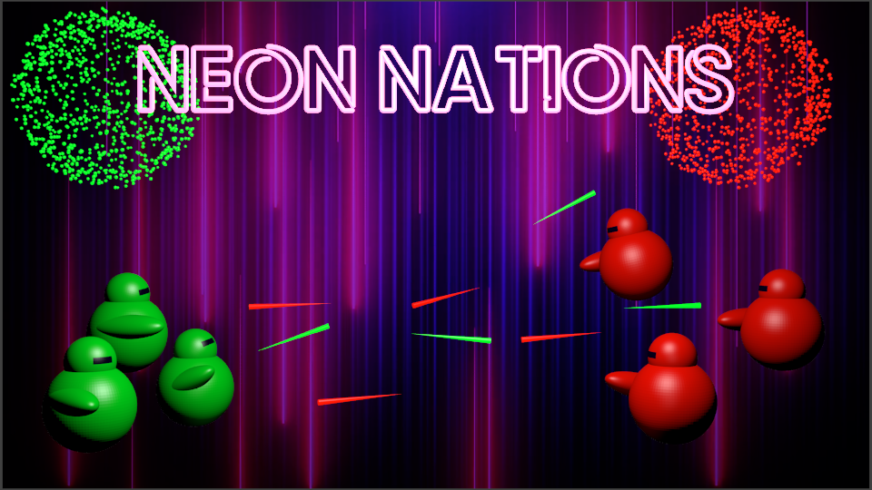

NeonNations
Neon Nations is a top-down multiplayer shooter made in Unity using C#. It takes place in a dark environment which consists of rectangular rooms and corridors. The only thing that’s constantly visible is your player. You can see throughout the map by emitting light, but this might show your location to the enemies. The goal is to fight enemies by shooting them with light bullets. There are 2 teams in the game, the player is added to the team with the lowest number of players. Bots can be added to the teams if there are not enough players.
Complexities in this project included making the online multiplayer aspect, making sure all the clients were synced so everyone would see the same thing, connecting to another player using IP adresses and a server browser. It also has a randomly generating
map that uses an algorithm popularized by the game "Brogue." The AI bots that you can fight can explore the map just like a real player using A* pathfinding. The game is very modular and this makes it easy to add new things like maps,
weapons or more than 2 teams.
This project was in a group with French exchange students, which was really fun.
The source code for this project, including design documents, can be found here on github.
Quick links to game design document and technical design document.